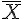
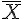

單組樣本的估計
估計的參數種類
根據單一母體所抽出的樣本，推論統計可以猜測母體中隨機變數 X 的下列特性：
- 可能屬於哪一類型的分布？ (distribution, 二項、布瓦松、均等、常態、指數、卡方....)
- 其平均值的可能點預估？ ([[
 ]]:mean 的點估計)
]]:mean 的點估計) - 其變異數的可能點預估？ ([[
 ]]:variance 的點估計)
]]:variance 的點估計) - 機率 p 的可能點預估？ (p 的點估計)
- 各種分布參數的可能點預估？ (parameters, [[
 ]])
]]) - 平均數的可能範圍？ ([[ ]]:mean 的區間估計)
- 變異數的可能範圍？ ([[ ]]:variance 的區間估計)
- 機率 p 的可能範圍？ (p 的區間估計)
- 各種分布參數的可能範圍預估？ (parameters, [[ ]] 的區間估計)
平均值的估計
定理：[[
 ]] 為 [[
]] 為 [[  ]] 的不偏估計式。
]] 的不偏估計式。定理：[[
 ]] 服從標準常態分布。(條件是樣本數夠多，根據中央極限定理)
]] 服從標準常態分布。(條件是樣本數夠多，根據中央極限定理)
平均值的信賴區間
第一種情況：變異數已知
在變異數 [[  ]] 已知的情況之下，應該用常態分配估計 [[
]] 已知的情況之下，應該用常態分配估計 [[  ]] 的信賴區間。
]] 的信賴區間。

通常我們將區間的兩邊取平均，得到 [[  ]] 的値
]] 的値
 ; 常態分布的信賴區間
; 常態分布的信賴區間  ; 因為
; 因為  服從常態分布
服從常態分布  ; 乘以
; 乘以 
 ; 減去 
; 減去   ; 乘以 -1 並改
; 乘以 -1 並改  為
為 
 ; 將整個算式反向寫出
; 將整個算式反向寫出
結論：在變異數 [[ ]] 已知的情況之下，[[ ]] 的信賴區間公式如下。

- 用法：L 是滿足 [[
 ]] 情況的 L 値，我們可以利用「累加常態分布表」查詢出 [[
]] 情況的 L 値，我們可以利用「累加常態分布表」查詢出 [[  ]] 的 z 値，該値即為滿足 [[ ]] 的 L 値。然後將此 L 値代入上列最後一個算式，即可得到 [[ ]] 值的信賴區間。
]] 的 z 値，該値即為滿足 [[ ]] 的 L 値。然後將此 L 値代入上列最後一個算式，即可得到 [[ ]] 值的信賴區間。
第二種情況：變異數未知
在變異數 [[ ]] 未知的情況之下，應該用 T 分配估計 [[ ]] 的信賴區間。
說明：因為變異數 [[ ]] 未知，此時必須改用樣本變異數 [[  ]] 對變異數進行估計，因此引入了另一層的誤差，這是為何改用 T 分布的原因。
]] 對變異數進行估計，因此引入了另一層的誤差，這是為何改用 T 分布的原因。

結論：在變異數 [[ ]] 未知的情況之下，[[ ]] 的信賴區間公式如下。

比例的估計
問題：假設 X 為某種 {0,1} 隨機變數，其中 [[  ]]，那麼我們如何根據樣本推估出 p 値呢？
]]，那麼我們如何根據樣本推估出 p 値呢？
 = 具有某特性的樣本數量/所有樣本數量
= 具有某特性的樣本數量/所有樣本數量
說明：比例 [[  ]] 是一種 {0,1} 的特殊隨機變數之平均，因此根據中央極限定理 [[
]] 是一種 {0,1} 的特殊隨機變數之平均，因此根據中央極限定理 [[  ]] 趨近於常態分配。
]] 趨近於常態分配。
期望値：[[  ]]
]]
二級動差：[[  ]]
]]
變異數：[[  ]]
]]
比例的信賴區間
根據平均值的估計法，[[ ]] 會趨近於標準常態分布 Z，套用到比例上後：[[  ]], [[
]], [[  ]]，因此下列算式會趨近於 Z。
]]，因此下列算式會趨近於 Z。

變異數的估計
定理：[[
 ]]
]]定義：[[
]] 的標準差為 [[  ]]，稱為平均標準誤。
]]，稱為平均標準誤。定義：(樣本變異數) [[
]]
定理：[[
]] 是 [[ ]] 的不偏估計式。定理：以下算式服從自由度 n-1 的卡方分配。

變異數的信賴區間
[[ ]] 的信賴區間為：

也就是：

請注意：累積卡方分布通常有分為「右尾累積」與「左尾累積」，本公式中的 [[  ]] 是根據「左尾累積」表所設計的。
]] 是根據「左尾累積」表所設計的。
如果按右尾累積表則公式應該改為：[[  ]]
]]
R 程式範例：平均值的區間估計
範例：母體的變異數已知的情況
mean.range = function(x, alpha=0.05, sigma) {
n = length(x) # n = 樣本數
mx = mean(x) # mx 即為平均值 mu 的點估計
r1 = qnorm(alpha/2) # 信賴區間，下半截掉 alpha/2
r2 = qnorm(1-alpha/2) # 信賴區間，上半截掉 alpha/2
L1 = mx-r2*sigma/sqrt(n) # 信賴區間下限
L2 = mx-r1*sigma/sqrt(n) # 信賴區間上限
range = c(L1, mx, L2) # 信賴區間
}以下的母體的標準差為 [[  ]]，也就是變異數 [[
]]，也就是變異數 [[  ]]
]]
# 常態分布 (標準差為 2, 變異數為 4)
> R = mean.range(rnorm(20, mean=3, sd=2), sigma=2)
> R
[1] 1.728047 2.604570 3.481093
> R = mean.range(rnorm(20, mean=3, sd=2), sigma=2)
> R
[1] 2.795340 3.671863 4.548385
> R = mean.range(rnorm(20, mean=3, sd=2), sigma=2)
> R
[1] 1.720384 2.596906 3.473429
> R = mean.range(rnorm(20, mean=3, sd=2), sigma=2)
> R
[1] 2.580179 3.456702 4.333224
> R = mean.range(rnorm(20, mean=3, sd=2), sigma=2)
> R
[1] 2.332650 3.209172 4.085695
> 範例：母體的變異數未知的情況。
mean.range2 = function(x, alpha=0.05) {
n = length(x) # n = 樣本數
mx = mean(x) # mx 即為平均值 mu 的點估計
S = sqrt(var(x)) # S 即為標準差的點估計
r1 = qt(alpha/2, df=n-1) # 信賴區間，下半截掉 alpha/2
r2 = qt(1-alpha/2, df=n-1) # 信賴區間，上半截掉 alpha/2
L1 = mx-r2*S/sqrt(n) # 信賴區間下限
L2 = mx-r1*S/sqrt(n) # 信賴區間上限
range = c(L1, mx, L2)
}執行結果
> # 常態分布 (標準差為 2, 變異數為 4)
> R = mean.range2(rnorm(20, mean=3, sd=2))
> R
[1] 2.303155 3.239184 4.175213
> R = mean.range2(rnorm(20, mean=3, sd=2))
> R
[1] 2.210444 3.146473 4.082502
> R = mean.range2(rnorm(20, mean=3, sd=2))
> R
[1] 1.745906 2.681934 3.617963
> R = mean.range2(rnorm(20, mean=3, sd=2))
> R
[1] 1.950239 2.886268 3.822296
> R = mean.range2(rnorm(20, mean=3, sd=2))
> R
[1] 2.049205 2.985234 3.921263
> R = mean.range2(rnorm(20, mean=3, sd=2))
> R
[1] 2.313619 3.249648 4.185677
>
> # 擲骰子
> R = mean.range2(sample(1:6, 10, replace=T))
> R
[1] 1.469286 2.900000 4.330714
> R = mean.range2(sample(1:6, 10, replace=T))
> R
[1] 1.569286 3.000000 4.430714
> R = mean.range2(sample(1:6, 10, replace=T))
> R
[1] 1.969286 3.400000 4.830714
> R = mean.range2(sample(1:6, 10, replace=T))
> R
[1] 2.269286 3.700000 5.130714
> R = mean.range2(sample(1:6, 10, replace=T))
> R
[1] 2.269286 3.700000 5.130714
>
> # 丟銅板 10 次
> R = mean.range2(sample(0:1, 10, replace=T))
> R
[1] -0.9307138 0.5000000 1.9307138
> R = mean.range2(sample(0:1, 10, replace=T))
> R
[1] -0.8307138 0.6000000 2.0307138
> R = mean.range2(sample(0:1, 10, replace=T))
> R
[1] -0.9307138 0.5000000 1.9307138
> R = mean.range2(sample(0:1, 10, replace=T))
> R
[1] -1.030714 0.400000 1.830714
> R = mean.range2(sample(0:1, 10, replace=T))
> R
[1] -0.8307138 0.6000000 2.0307138
>
> # 丟銅板 100 次
> R = mean.range2(sample(0:1, 100, replace=T))
> R
[1] 0.1131566 0.5100000 0.9068434
> R = mean.range2(sample(0:1, 100, replace=T))
> R
[1] 0.03315661 0.43000000 0.82684339
> R = mean.range2(sample(0:1, 100, replace=T))
> R
[1] 0.1631566 0.5600000 0.9568434
> R = mean.range2(sample(0:1, 100, replace=T))
> R
[1] 0.1231566 0.5200000 0.9168434
> R = mean.range2(sample(0:1, 100, replace=T))
> R
[1] 0.1631566 0.5600000 0.9568434
> R = mean.range2(sample(0:1, 100, replace=T))
> R
[1] -0.01684339 0.38000000 0.77684339
> R 程式範例：變異數的區間估計
var.range = function(x, alpha=0.05) {
n = length(x) # n = 樣本數
r1 = qchisq(alpha/2, df=n-1) # 信賴區間，下半截掉 alpha/2
r2 = qchisq(1-alpha/2, df=n-1) # 信賴區間，上半截掉 alpha/2
S2 = var(x) # 樣本變異數
L1 = (n-1)*S2/r2 # 信賴區間下限
L2 = (n-1)*S2/r1 # 信賴區間上限
range = c(L1, S2, L2) # 信賴區間
}執行結果
> R=var.range(rnorm(20, mean=5, sd=3))
> R
[1] 7.182354 12.418792 26.492630
> R=var.range(rnorm(20, mean=5, sd=3))
> R
[1] 3.783027 6.541118 13.953967
> R=var.range(rnorm(20, mean=5, sd=3))
> R
[1] 4.686703 8.103637 17.287242
> R=var.range(rnorm(20, mean=5, sd=3))
> R
[1] 3.758948 6.499484 13.865151
> R=var.range(rnorm(20, mean=5, sd=3))
> R
[1] 6.451399 11.154920 23.796450
> R=var.range(rnorm(20, mean=5, sd=3))
> R
[1] 5.710536 9.873916 21.063724
> R=var.range(rnorm(20, mean=5, sd=3))
> R
[1] 7.84639 13.56696 28.94197
# 擲骰子
> R = var.range(sample(1:6, 20, replace=T))
> R
[1] 1.607192 2.778947 5.928244
> R = var.range(sample(1:6, 20, replace=T))
> R
[1] 1.940502 3.355263 7.157681
> R = var.range(sample(1:6, 20, replace=T))
> R
[1] 2.319470 4.010526 8.555533
> R = var.range(sample(1:6, 20, replace=T))
> R
[1] 1.246487 2.155263 4.597757
> R = var.range(sample(1:6, 20, replace=T))
> R
[1] 1.637631 2.831579 6.040521
> R = var.range(sample(1:6, 20, replace=T))
> R
[1] 2.502106 4.326316 9.229198
> R = var.range(sample(1:6, 20, replace=T))
> R
[1] 1.059286 1.831579 3.907252
> # 丟銅板
> R = var.range(sample(0:1, 25, replace=T))
> R
[1] 0.1524232 0.2500000 0.4838261
> R = var.range(sample(0:1, 25, replace=T))
> R
[1] 0.1381971 0.2266667 0.4386690
> R = var.range(sample(0:1, 25, replace=T))
> R
[1] 0.1564879 0.2566667 0.4967281
> R = var.range(sample(0:1, 25, replace=T))
> R
[1] 0.1524232 0.2500000 0.4838261
> R = var.range(sample(0:1, 25, replace=T))
> R
[1] 0.1463263 0.2400000 0.4644730
> R = var.range(sample(0:1, 25, replace=T))
> R
[1] 0.1524232 0.2500000 0.4838261
> R = var.range(sample(0:1, 25, replace=T))
> R
[1] 0.1524232 0.2500000 0.4838261兩組樣本的估計
根據兩個母體所抽出的樣本，推論統計可以猜測兩個母體中隨機變數 X, Y 的下列特性：
- 比較兩機率 p1, p2 的差值 p1-p2 的檢定
- 比較兩平均數 [[
 ]] 的差值 [[
]] 的差值 [[  ]] 的檢定
]] 的檢定 - 比較兩變異數 [[
 ]] 的差值 [[
]] 的差值 [[  ]] 的檢定
]] 的檢定 - 比較兩組中位數 M 的差值 [[
 ]] 的檢定 (無母數方法)
]] 的檢定 (無母數方法)